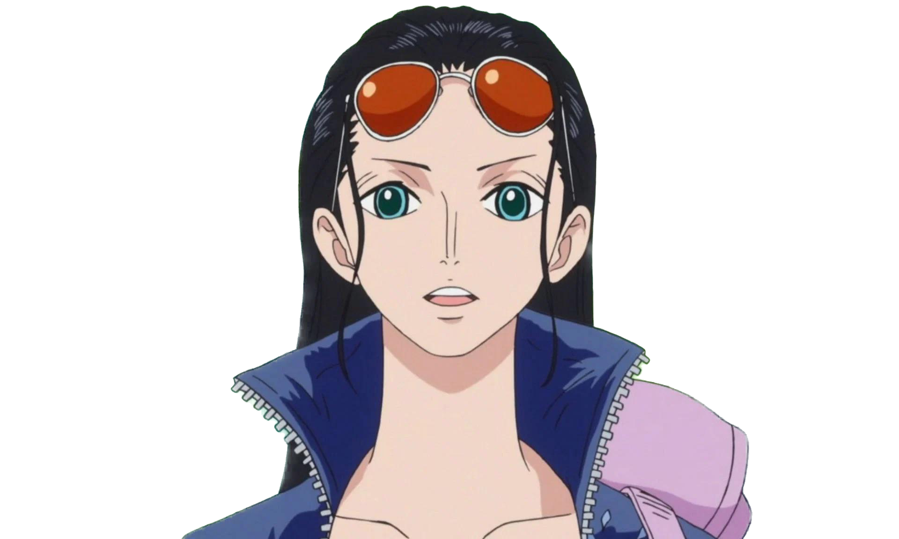
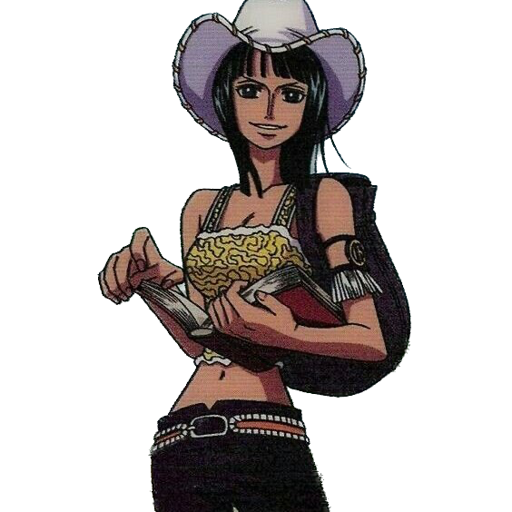

"Fools who don't respect the past are doomed to repeat it."

Our archaeologist, Robin, she's the coolest! She was all alone for years, running from the World Government who called her a demon just for wanting to learn about history.
She can grow arms and eyes anywhere using her Devil Fruit powers, which helps us in fights and for grabbing stuff I can't reach. She's always reading these big books about ancient things and knows everything about those weird cube stones.
Our archaeologist, Robin, she's the coolest! She was all alone for years, running from the World Government who called her a demon just for wanting to learn about history.
She can grow arms and eyes anywhere using her Devil Fruit powers, which helps us in fights and for grabbing stuff I can't reach. She's always reading these big books about ancient things and knows everything about those weird cube stones.
When those CP9 jerks took her to Enies Lobby, we declared war on the World Government - and we won! That's when she finally understood she belongs with us.
She says really dark, creepy things that make Usopp and Chopper freak out, which is funny! Robin's smile is the best because it's real now. She's not just smart - she's brave, kind, and my irreplaceable nakama who makes our crew complete!